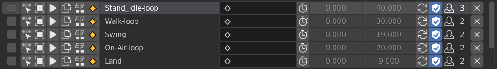
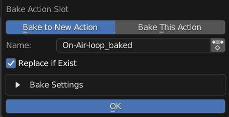
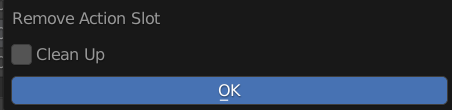

List Items
Items in the Frame Range Listbox
Selection
Select State Use for Bake Selected Actions, Push All to NLA, and Action Baker
Set Active Slot
Set Current Active Slot
Select Object
Select Object with this Action
Click: Only Check Active Action Shift Click: Check All Slots
Play
Play This Action
Click: Play Action, Pause if is playing and is on the Same Action, Set Frame to Start if is not on Same Action or current frame out of frame range Shift Click: Move to Frame Start and Play Animation
Duplicate
Duplicate this Action and Load to Object
Push to NLA
Push this Action to NLA
Bake Action
Bake this Action
Bake to New Action / Bake to Self: Bake action into a new action, or bake to current action
Name: Name of Baked Action, Automatically Set to Action’s Bake Name By Default
Use Action: Use Action Picker instead of String Input, Useful if you want to Replace Action
Replace if Exist: Replace Action if Already Exist Action with Name
Bake Settings: Same Settings with the Blender Build in Bake Operator
Name
Action’s Name
Bake Name
Name Used for Baking, Hidden In Misc Settings in Action Settings
Frame Range
Frame Range of the Action
Use Manual Frame Range: Enable to use Custom Frame Range
Frame Start: Start Frame, Cannot be Edited if Use Manual Frame Range is Off
Frame End: End Frame, Cannot be Edited if Use Manual Frame Range is Off
Use Cyclic
Action’s Use Cyclic Setting
Fake User
Fake User State of Action
Users
The Amount of Users of Action
Remove
Remove Action Slot or Action
Click: Remove From Slot
Shift Click: Remove Action From Blend File As Well

This Menu Only Pop up on Shift Click
Clean Up: Remove Missing Action Slot From other Objects in this Blend File